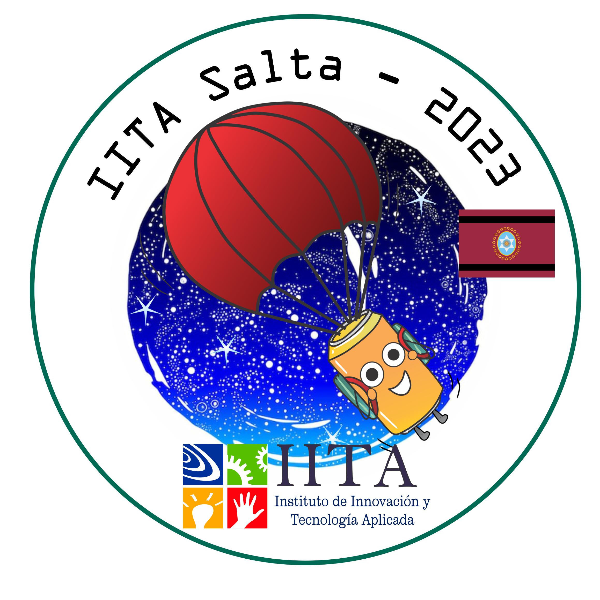

Hola soy Enzo! el Profe mentor del equipo IITA SALTA representando al Instituto de Innovacion y Tecnologia Aplicada (IITA) en la competencia CANSAT organizada por el Ministerio de Ciencia, Tecnología e Innovación (MINCyT) y la Comisión Nacional de Actividades Espaciales (CONAE) en su edición del año 2023, la idea de este repositorio es poder tener un lugar donde puedan encontrar el proceso y evolución que fue siguiendo el equipo para cada una de las etapas de nuestra propuesta de CANSAT en su misión MAGNET-IITA.
El equipo IITA-Salta está compuesto por los siguientes integrantes.
Rol en el equipo:
Rol en el equipo:

Rol en el equipo:

Rol en el equipo:

Rol en el equipo:

Rol en el equipo:


Nuestro Cansat va a usarse para medir el campo magnético de la Tierra en diferentes altitudes y ubicaciones. Estos datos podrían usarse para estudiar el campo magnético de la Tierra y ayudar en una problemática ambiental de la región como la actividad sísmica y volcánica en nuestra provincia.
Esto es para nosotros una buena **MISIÓN** viéndolo como problemática ambiental, ya que Salta, es una región con una rica historia geológica y una importante actividad volcánica, por lo que estudiar las propiedades magnéticas del área podría ser un proyecto muy interesante y relevante.
Nuestro **ENFOQUE** será investigar el uso potencial de las mediciones de campos magnéticos para monitorear la actividad volcánica. Los cambios en el campo magnético pueden ser indicativos de actividad subterránea, por lo que desarrollar un sistema para medir y analizar datos de campo magnético en tiempo real podría ayudar a mejorar los sistemas de alerta sísmica temprana y monitoreo de volcanes.
Para poder elegir el Diseño el equipo planeó en una reunión dibujando en una hoja, como debería ser la forma del cilindro máximo que estaba permitido en la competencia, luego fueron agregando los componentes que necesitaríamos para la misión primaria, sin conocer del todo aún las dimensiones reales de estos componentes, pero estimando y utilizando los datasheet e internet para poder hacer esas estimaciones lo más realistas posible, finalmente agregaron nuestro sensor a utilizar para la misión secundaria y tuvimos un primer boceto de cómo sería nuestro CANSAT.

En esta etapa fue crucial la capacitación virtual de la CONAE que tomamos para poder definir algunas cuestiones importantes de nuestra primera aproximación en la cual los chicos con cada tópico diferente que veían en las clases, decidían agregar, sacar o modificar alguna parte de nuestro DISEÑO por recomendación de los expertos.
Para poder realizar piezas personalizadas, decidimos utilizar tecnología de Impresión 3D ya que Morena hacía poco había podido comprar una y quería aprovechar para aprender a diseñar sus propias piezas, también porque en el Instituto contamos con una gran variedad de impresoras 3D y nos sería fácil poder tener piezas para probar.
Así fue como decidieron que las piezas a diseñar iban a ser:
Estas piezas fueron teniendo una serie de modificaciones hasta llegar a la versión final de cada una, ya que con cada prueba Morena fue adquiriendo experiencia sobre la forma que debía tener para que sean útiles.
La versión final de cada pieza la pueden encontrar en esta carpeta.
El Paracaídas tiene las dimensiones de 25cm de diámetro con un orificio de derrame o orificio de ventilación y Daiana se encargó de hacer los cálculos para poder conseguir o diseñar el correcto.

Como vieron en el boceto, la primera idea de los chicos fue agarrar el paracaídas de un solo lugar en el centro y tirarlo como si fueran los Soldaditos de Juguete.

Esto no resultó del todo bien y decidieron cambiarlo por un sistema donde tiene 3 puntos de agarre y cada cordón está separado, lo que ayudó a que el paracaídas se despliegue de la forma correcta y no se enredaran los cordones. Esta misma pieza tiene el propósito de soportar las varillas de fibra de carbono de la estructura.
Con las piezas que sujetan los cordones del paracaídas tuvieron que rediseñarlas, ya que a las primeras debían hacerles un corte con el minitorno para poder encajar los cordones, y eso suponía un punto débil en los agarres. Así quedaron como se aprecia en la imagen a la derecha, con un orificio en la parte baja para pasar el cordón y solo poner la pieza haciendo clic sobre el tope.

Esta pieza no la tenían prevista en el diseño hasta que realizaron las pruebas de vibración. Más adelante explicaré por qué decidieron incorporar esto al modelo final.


Para realizar el Diagrama eléctrico usaron EasyEDA en esta parte es donde más ayuda necesitaron, la idea fue que Gabriel con la ayuda de Iñaki vayan construyendo los circuitos en Protoboard, probando primero el funcionamiento de los sensores de forma individual y luego ir acoplando todo en un solo firmware para el CANSAT.

Una vez estaban seguros de que los circuitos electrónicos funcionaban en la Protoboard y el CANSAT cumplía con la Transmisión de datos tanto para la misión Primaria como la Secundaria empezaron a hacer los circuitos Eléctricos.

Los profes los ayudamos con el diseño de Placas en PCB personalizadas, que mandamos a pedir, que era por ahí lo que pensábamos que se iba a complicar más, pero lo terminaron haciendo ellos sin problemas ya que entendieron cómo posicionar los componentes y rutear todo, así que solo nos quedó la tarea de corroborar que su diseño no hacía un cortocircuito.
Base con agujeros

Piso 1 Componentes

Piso 2 Mision Secundaria

Esperando que lleguen las placas pasaba el tiempo y la presentación se nos venía encima, por lo que decidimos no confiarnos porque sino nos quedaríamos sin poder terminar ni probar el CANSAT y decidimos realizar a mano en placas experimentales perforadas, todo el diseño de los circuitos electrónicos para nuestro CANSAT, esto fue un gran trabajo por parte de Gabriel que tiene muy buenas habilidades para soldar, y con las herramientas manuales, nos contó que es debido a que ayuda a su papá en un taller de AudioCAR y Electrónica.

Después de terminar solo quedaban ponerle los cables que unían los pisos del CANSAT y estaba listo para poder comenzar a realizar las Pruebas de Funcionamiento.

Encargada: Daiana
Para poder programar la estación terrestre como el firmware del Módulo que sería receptor de los datos, Daiana tuvo que aprender a programar en Arduino ya que cuando comenzó contaba con más habilidades en Python y para mejorar y facilitar la experiencia, los profes le recomendamos utilizar Arduino IoT Cloud ya que nos ofrecía la ventaja de tener una estación terrestre visualizando los datos y algunas gráficas en tiempo real a través de una especie de "arrastrar y soltar", lo que solucionaba la parte gráfica. Aunque le costó un poco aprender a usarlo, valió la pena.
Visualizando en Tiempo Real los Datos

Visualizando Gráfica en Tiempo Real los Datos


Cuando teníamos funcionando la Estación Terrestre con Arduino IoT Cloud, preguntamos en el foro si era posible tener Wi-Fi en el lugar de lanzamiento o Red de Datos Móviles, y nos dijeron que no nos lo aseguraban debido a que el lugar estaba alejado. Esto era un problema, ya que lo que estábamos usando utilizaba internet para enviar los datos desde nuestro Módulo receptor hacia Arduino IoT Cloud. Por recomendación, decidimos que Daiana hiciera una estación terrestre en Python que leyera los datos del puerto serial, los visualizara y los guardara en archivos. Con esto, Daiana pudo profundizar un poco más en su conocimiento en Python, pero era una tarea contrarreloj para poder tenerlo funcionando.

Los archivos que guarda son un archivo descriptivo y uno para analizarlo, pero aún no pudimos llegar a tener datos para analizar por lo que vamos a contar en las Pruebas.

Encargado: Iñaki
Elementos utilizados:
Procedimiento:

Link de Video de Prueba de Temperatura: https://youtu.be/VTKC8T8OjOQ
Conclusion:
Pudimos corroborar el correcto funcionamiento de nuestro Sensor de Temperatura, y que la estación Terrestre visualiza los datos de la prueba. Sin embargo, también nos sirvió para darnos cuenta de que el pegamento que estábamos utilizando (POXIPOL) no era el mejor para este tipo de uso, así que decidimos cambiarlo por la Gotita.
Elementos utilizados:
Procedimiento:

Conclusion:
Pudimos corroborar el correcto funcionamiento de nuestro Sensor de Presión, y que la estación Terrestre visualiza los datos de la prueba. Sin embargo, hubiera estado mejor poder hacer la prueba con una olla a presión o con una Aspiradora Industrial, y necesitábamos sellar bien el recipiente contenedor.
Elementos Utilizados:
Procedimiento:

Conclusion:
Pudimos corroborar el correcto funcionamiento de nuestro CANSAT. Sin embargo, la vibración de la máquina hizo que las placas perforadas empiecen a deslizarse por las varillas de Fibra de Carbono, por lo que Morena tuvo que diseñar las Varillitas Separadoras que mostramos al principio para darle una mayor estabilidad. También aseguramos las conexiones de los pines con silicona para asegurarlas, y la batería y la antena con un precinto y cinta doble faz. Esta prueba, aunque parecía menor, resultó ser la que nos demandó que aseguremos la Estructura de nuestro CANSAT.
Elementos Utilizados:
Procedimiento:

Conclusion:
Pudimos corroborar el correcto funcionamiento de nuestro CANSAT. Aguantó la prueba de Caída y todas las partes siguieron en una sola pieza mientras continuaba transmitiendo los datos a la estación terrestre.
Elementos Utilizados:
Procedimiento:

Conclusion:
Pudimos corroborar que nuestro CANSAT con todos los componentes que utiliza se encuentra dentro de los márgenes de la competencia.
Para poder corroborar el funcionamiento realizando una prueba lo más real posible, decidimos utilizar un Dron de gran porte capaz de llevar pesos livianos y que contara con un Tren de Aterrizaje desplegable, para eso nos dirigimos hacia la CADAER club de amigos del Aeromodelismo. Este es un campo donde realizan pruebas de lanzamientos, pilotan aviones a escala de modelismo, donde estamos muy agradecidos por el buen trato que nos brindaron ya que aparte de realizar nuestra prueba también pudimos aprender sobre el Hobby del Aeromodelismo.
Elementos Utilizados:
Procedimiento:


Conclusion:
Mientras hacíamos las pruebas el Piloto del Dron perdió el Control desde el mando, y nuestro CANSAT como su DRON cayeron desde aproximadamente 60m ya que no había llegado a desplegar las patitas retractiles por lo que se vinieron en picada juntos y el CANSAT sufrió algunos daños.

Fail de la Prueba de Vuelo con Dron
Pero aunque parece algo malo estas pruebas nos sirvieron para darnos cuenta y aprender de lo siguiente:
Estamos muy agradecidos por permitirnos participar en la competencia y por todo el aprendizaje y experiencia que nos brindaron desde el comienzo, por el feedback enviado tanto desde la plataforma para poder solucionar nuestros inconvenientes como el de Florencia Moya nuestra tutora que estuvo pendiente de nuestros avances a lo largo de la competencia, esperamos poder reunirnos con ustedes y realizar una prueba de lanzamiento real y así crear un espacio más en este repositorio y seguir sumando experiencias llenas de aprendizaje.

Equipo: IITA-SALTA (18864681).